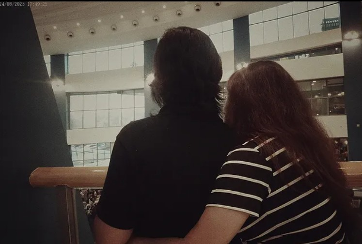
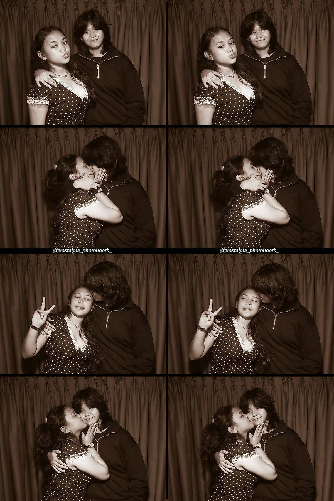

I Love You! :)
Hiiiiii, babyyyy koooo! (๑'ᴗ')ゞ It's been a while since we talked seriously. Dito ko na ibubuhos lahat hehehe.. Kasi I don't know if this will be the last time orrrr... Basta I will try as much as possible to lighten up the mood para hindi ito mabigat sa ating dalawa hanggang sa dulo ng message na itooo.. So, first of all! Gusto ko lang malaman mo na kahit saan man tayo dalhin ng tadhana, mahal na mahal na mahal kita and nothing will ever change thatt;) You are the most loving, thoughtful, gorgeous, smart, kind, and of course, MOST genuine woman I've ever met. I'll always be grateful na may nakilala akong tao na katulad mo. I never knew na may nag-eexist palang tao na full of love and positivity in life. Kaya very thankful ako sa'yo kasi you helped me grow sa loob ng relationship natin and also as a person. Sobrang dami ko na natutunan sa relationship natin. And what stands out the most is you taught me that it is okay to open up your feelings to someone you know who understands you. Before I met you, I was so scared to show my weak side. I was always seen as a tough, strong, and independent woman as I was always thinking that people will judge me for being weak. I wasn't even expressive back then, but because of you, I learned how to express what I feel—to the point my "nonchalant" side just faded. Kaya sobrang grateful ako sa'yoooo, sooo muchhhh! Thank you for always being there kahit na mahirap akong intindihin, for always loving me kahit na minsan nasusungitan ko ikaw at mahirap akong mahalin, for understanding me lalo na 'pag busy sa school, for your time kapag I need someone na kausap or kakulitan, for always making me laugh and happy sa kahit anong gawin mo, for your loyalty, and for always playing Roblox withhh meee!! I appreciate it veryyy muchhh There are lots of things talaga na I am very much thankful sa'yo, especially that you made me feel loved, valued, respected, and seen. Only if you can see my thoughts through my heart, you would know how grateful I am. Aside from these words of thanks, there are also things I want to apologize for. Unang-una po, I am so sorry sa mga pagkukulang ko as your partner. I know na I have so many shortcomings, especially when it comes to giving you attention or spending time with you. We both know na mahirap talaga ang set-up natin but because of me, I made it feel harder. I am so sorry kung medyo maraming tampo ang itinago ko sa'yo. Aaminin ko na po sa'yo ngayon, hindi naman po ako madalas magtampo, pero mabibigat lang talaga and may root where it is all coming from. Ilalabas ko na po sa'yo para mapagaan na rin 'yung loob ko po. About our 1st anniversary. When you chose your friends over me. Although I understand naman na minsan lang naman kayo magkita, and they came first before me kaya nagpaubaya na lang ako, but it just hurts seeing you choose them over me sa special day natin:( you know how excited I was to celebrate that with you especially it is our first year. But because of that, hindi na nawala sa isip ko 'yung thought na you would always choose your friends na over me. And also 'yung thought na celebrating monthsaries with you, parang naging normal day na lang:( It made a huge impact talaga nung anniversary natin. So everytime you are with your friends, I am so jealous. I feel like tuwing kasama mo sila, nakakalimutan mo ako. I am sorry kung nafifeel ko pong mas priority mo sila more than me, when it shouldn't be that way. Another thing is about Clarice. Yes, inaadmit ko, I feel jealousy towards her. Kasi I know that she's been around you lately, and I just don't feel good about it. Or maybe I am just being too dramatic because I can't forget about what she has done to you. After you kwento what happened sa inyo, I'd say my perception about her changed a lot. The disrespect she gave you back then, and now you guys are so close again. Sorry po pero kasi when you got closer again, nag-iba na rin ikaw:( 'Yung attention mo most of the time is nasa kaniya. Every time magkasama tayo, siya laging bukambibig mo. Sa napapadalas na pagsasama niyo, nakakalimutan mo na ulit mag-update sa akin kung saan ikaw pumupunta or sasabihin mo na lang pag naka-uwi na ikaw. Lagi ko nakikita sa notes na lagi ikaw nakamention. Kaya kinimkim ko po sa sarili ko na minsan naisip ko na ginagamit ka lang niya because she knows that she has an easy access sa'yo. Remember when she had a BF? Were you guys socializing that much? Were you guys communicating a lot? Did she ever check on you consistently? Did she even make you feel like she's still your friend even though she has someone special? You even told me na hindi mo na siya ulit papansinin and whatnot. But in the end, you guys became close again. I felt so betrayed kasi nasira na ‘yung image niya sa perspective ko, yet, siya pa rin pinapakisamahan mo. And I've always thought that she has always been the problem sa friendships, so surprisingly, natitiis mo siya. She used to be my friend and be in the same circle also, so I have a little background about her attitude. You may forgive but never forget about the disrespect and the way she made you felt embarrassed. Not everybody deserves a second chance, especially after what she has done to you. I am so sorry for these thoughts, maybe I just needed a clear explanation for that. I am sorry kung nagtampo rin ako sa little things you did with her. Like magjogging with her from 7pm to almost 12am and chitchat with her from 12am onwards. And just to make it clear, hindi po siya totally tampo but kasi ‘yung care ko po sa’yo. About your health. Ayaw ko lang maulit ‘yung dati na nararamdaman mong lagi nahihilo, and basta in general, I don’t want you to be sick. Remember mo po ba ‘yung promise mo sa’kin na hindi na ikaw magpupuyat after S.Y.? Hindi mo po ‘yun ginawa partly because of her..:( Kung siya po is nagpupuyat or sanay sa mga ganiyan, ikaw naman po is I want to take care of you pero wala naman po ako magagawa since may life naman ikaw outside our relationship. I don’t want to sound so controlling so I held everything back, I am sorry. Aaminin ko po na isa talaga siya sa nakakapagpatrigger ng anxiety ko eveytime you’re with her:’( Iniisip ko baka mamaya may something bad siyang gawin na ma-influence ikaw. Of course, nakakahiya naman pong sabihin sa’yo mga ‘yun kasi I know you consider her as your bestfriend again, and I don’t want to ruin your happiness:) I am so so sorry for keeping all this from you. Siguro these are all the little tampos na nag-grow kakatago ko. Ako na lang po mag-gigive way for your genuine happiness:)) I hope she makes you the happiesttttt friend everrr. I am also very sorry kasi I know na sobrang dami ko talagang pagkukulang as your partner. Marami akong hindi naibigay sa’yo, mga napa-feel ko na hindi naman dapat, and to all of my broken promises. I regret not spending time with you more, but I deeply understand our busy time. Siguro kung mas nagbond lang tayo, mas marami tayong nalaman pa about each other. I am also sorry kasi I’ve been craving for deeper connections with you, but I got tired of waiting—kasi bakit pag sa akin need mo ng time, but when it comes to your friends, you can open up so easily? I think I have given you enough time to at least tell me your smallest problem in life, but you didn’t. Mas na-eexpress mo rin sarili mo when you’re with them, compared to when you’re with me, sobrang limited ng actions mo. Tulad na lang may nagkuwento sa akin, na sa kanila ka nagrarant about our relationship na dapat sa akin mo dinederetso, ‘di ba?:( Kinuwento mo ‘yung sa concert last time na you thought na naghug kami agad ng friend ko the moment we saw each other, when in fact, hindi naman po talaga kami naghug. Hinampas niya nga ako agad nun eh, and you know that I hate being touchy with my friends. I noticed na bigla na lang ikaw nagtampo, ayun na pala ang reason.:) Buti pa sa kanila, vocal ikaw:( Ikaw na rin po nagsasabing “communication is the key” pero ikaw rin po hindi nakikipag-communicate:( Alam mo po, I was waiting for you to initiate deep talks, pero never nangyari po. Wini-wait ko na ikaw unang magbring-up ng mga problems na parehas nating nanonotice, but it never happened. Kapag nabring-up ko na ‘yung problem na ‘yun, tsaka mo lang po sasabihin na napapansin mo rin pala. You only initiated once or twice, but the rest, ako na po palagi:(( And also, may times din po kasi na I know accidentally tayong nagkakasalubong sa labas, pero iniiwasan mo lang ako. Kaya I felt like hindi ikaw proud sa kung anong mayroon tayo—sa relationship natin. Example ko na lang po nung nasa 7/11 tayo sa CCP, you were with Clarice at that time, and ako naman I was with Nash. I saw you hid from me. You made Clarice as your look out nung nasa counter kami habang kayo nasa likod. And nung napansin ko ‘yun, Nash and I decided to stay muna outside 7/11, sa may staircase, hoping na pansinin mo ako. But what did you do? You guys ran away from us. Sobrang nasaktan ako that day, kasi sariling girlfriend ko, hindi manlang nag hi or hello sa akin, tinakbuhan pa ako. Since kilala ka ni Nash, nagtaka rin siya kung bakit ganun ginawa mo—we were both clueless. Pero naalala ko ‘yung time na nung si Elisha ang nakasalubong natin along Vito Cruz, nagulat pa ako sa hiyaw mo. Nakita ko ‘yung excitement sa pagtakbo mo papunta sa kaniya and nagkayakapan pa kayo. Kaya sorry po, hindi ko mapigilang mag-overthink kung proud ka ba talaga sa atin.:( kasi simpleng unexpected interaction sa labas, hindi mo magawa.:( I know isasagot mo is “nahihiya ako” which is very baffling sa part ko. I don’t know mung bakit po ikaw nahihiya, eh lagi ko naman po ipinapaalala sa’yo na wala ka dapat ikahiya. Pero kita ko kapag sa kanila, okay naman ikaw, hindi ko nakikita ‘yung bahid ng feeling na “hiya”. So, we both know naman na ‘pag everytime we’re together, there’s nothing wrong na magkamali—it wouldn’t make us a bad girlfriend kapag may nagkamali. Parang sa side ko po kasi, hindi ako nagmumukhang “girlfriend” sa’yo:( Kulang ‘yung knowledge ko about you. Tapos when it comes to your friends, nakakapagrant ikaw ng problems mo. They know you better than me, and it hurts. It’s just so unfair na I am here as your “partner” but I feel like I wasn’t able to perform my duty as it. I had so much questions in mind when it comes to your friends that it was answered by my own realizations:) And remember the time nung we didn’t talk for a week? I actually didn’t like the idea of doing that, pero nakakita ako dun ng hope na baka ma-realize mo na it was all about your friends—na malaki na tampo ko about sa kanila, especially when it’s about Clarice. Kaya nung nag-chat ikaw sa’kin na magRorobinson kayo ni Clarice, dun na talaga ako na-trigger and forced to do the 1 week no communication. Aaminin ko po, we were so close on parting ways at that time, but I re-read all the reassurance you told me way back. And also maybe naghope pa ako ng more reassurance from you, pero you’ve mentioned once na you are not a big fan of words and more on action ikaw, kaya hindi ko na ikaw kinulit pa. But I still gave in a little chance pa, hoping marinig ko ulit sa’yo kung gaano mo ako kamahal. Even though I tried to bare all these tampos, my love for you didn’t change. It was all my love na nangibabaw pa rin kahit na ganiyan po na-feel ko My love for you remained genuine and pure. Minahal at mahal kitang lubos. To the point na mas mahal kita higit pa sa sarili ko. I’ve always prioritized your peace of mind and health. I hope naramdaman mo ‘yung love and care na deserve mo—just like what I promised before I courted you. Throughout the 20 months of being together, we have built so many memories. All those laughters, teasings, and cute little suyuans will be cherished forever. Marami na tayong napagdaanan na problems lalo na when it comes to communication. It is really hard to get through this kind of problem, but surprisingly, we’ve made it regardless of being in a long distance. Kahit hindi laging madali, pinili pa rin nating intindihin ang isa’t isa sa abot ng makakaya natin. May mga araw na puno ng doubt at pagod, pero nandiyan pa rin ‘yung effort natin to make things work. Hindi man perfect ‘yung relationship natin, pero naging totoo at sincere naman lahat ng pinagsamahan natin. Sobrang hirap gawin ng decision na ‘to. Pero maybe parting ways for now can help us to be the best version of ourselves. It doesn’t mean we’re giving up on each other, but rather giving ourselves the space to grow.:) Sometimes, distance allows us to understand things we couldn’t see before. I believe this time apart can help us heal, reflect, and become stronger individually. You know how much I love you. But siguro ngayon, mas kailangan na natin piliin ‘yung sarili natin para mas mag-grow pa tayo individually. Walang galit, walang sisihan—just pure understanding sa kung anong kaya at hindi na natin kayang ibigay. I’m grateful for everything we had, and I genuinely wish you happiness, kahit hindi na ako ‘yung kasama mo. I want to end this chapter of our lives with respect and care for each other. Dahil ibinigay mo sa akin ‘yung puso mo nang buo, ibabalik ko rin ito nang buo. I will never block you sa kahit anong social media natin so that we can still have communication if you want. I am open naman sa atin na magkaroon pa rin ng communication kahit as friends?:D I may sound selfish, but I don’t see any reason naman to block or unfriend you eh!:) Maybe you know, one day.. Our paths might cross again. Sana kapag parehas na tayong stable sa life, mahanap ulit kita—para tuparin ‘yung pangarap natin sa simpleng tahanan pero puno ng pagmamahal at kapayapaan kasama ang ating mga anak na pusa at aso. Napakarami kong natutunan sa relationship natin at for sure mai-a-apply ko ‘to as an individual. Sana ikaw rin po ay maraming natutunan. Kahit na hindi tayo perfect, may mga pagkukulang, marami pa rin tayong natutunan sa isa’t isa. Natutunan nating maging mas patient, mas maging understanding, at mas matatag sa harap ng mga problema. Hindi man naging madali ang lahat, pero bawat pagsubok naging lesson kung paano tayo mag-grow bilang tao. Lalo na ang hirap ng situation nating LDR, hindi pa tayo palagi nakakapag-kwentuhan. Pero kabila ng lahat, sobrang saya ko pa rin kasi marami rin tayong good memories na nabuo. If ever gusto mo pa rin ako imessage, ‘wag ikaw mahihiya kasi my inbox will always be open for you. Hindi naman magbabago ‘yung love and care ko for you. Just like what I told you nung unang-una palang, I can always be your safety net. Palagi mo pa rin akong kakampi. I am still committed to be your crying shoulder when life gets hard. Or kung gusto mo pa rin ng kakulitan minsan, we can still send funny videos sa reels or tiktok! You will always be my baby who loves color blue. If you want sa susunod, we can grab a matcha and carbonara—one of your favorite food:).‘Wag rin masyado magsa-sakay ng LRT kasi you mentioned it once sa akin na ‘pag nag LRT ikaw, nahihilo ka:( kaya never tayo sumakay diyan. And also sa elevator, as much as possible, avoid mo yan ha, I’ll not be around para kapitan mo. Ayusin pa rin po ang body clock! Iwasan magpuyat, please? Kapag magrread ng manhwa or magwwatch ng animé, laging mag-set ng time limit. Always drink cold water to keep your body hydrated lalo na po ngayon magsusummer na. Kasi alam kong ayaw mo ng warm water, kaya kahit super cold, drink ikaw! Plus, wag gagawing tubig ang Milo! Mataas sa sugar ang Milo. Kapag lalabas ikaw, always bring umbrella para hindi ikaw naiinitan. I may not be able to take care of you physically, but please, take care of yourself for me. ‘Yung prinomise mo po sa akin na never mo na ulit gagawin ‘yung saktan ang sarili, tuparin ‘yun ha?:(( don’t let the voices in your head win. I know, mahirap itong pinagdadaan natin ngayon, pero always pray tayo kay God kasi he works in mysterious ways. Lagi ko pa rin ikaw ipagppray and your family!♡ Kahit hindi ko sila na-meet, thankful pa rin ako na hindi nagkaroon ng conflict. Lagi ko pa rin ipinagpapasalamat kay God na ipinaranas niya sa akin ang mahalin ka at maranasan ang init ng pagmamahal mo.:) Masaya ako kasi naging part tayo ng buhay ng isa’t isa. Always look at the bright side, laging magsmile! Ayaw ko ng sad ikaw:( I am still your biggest and number 1 supporter. You will always have my heart, Via. Kahit na anong mangyari, sa’yong-Sa’yo lang ako, Palagi. But for now, let’s choose ourselves and enjoy what life has to offer. Not a goodbye, but see you around, babyy kooo!!♡ I hope you still do great kahit na magkalayo na tayo. Mahal na mahal na mahal na mahal na mahal kita!💛💙
-Your sinigangsamisonanilagasakaninsakaldero, babycakesloviedabsq, angtoyosasukasaadobongasonialingpuring, honeymylovesosweet, bib3labs, mhal, honey, b4b3, my love, wifey, baby, asawa ...Kung may gusto man ikaw sabihin, feel free to tell me anything na nasa mind mo. If you think I owe you an explanation about certain things, then just tell me. I want us to end in a very healthy way. Ayaw kong may ma-iwan na tanong sa isip mo. Kung may gumugulo man sa isip mo, sabihin mo lang lahat sa’kin para maging clear lahat. Dapat sa personal ko po talaga ‘to sasabihin lahat, pero I don’t know when ikaw free. And pag pinatagal ko pa, mas lalo lang po tayo masasaktan(ू˃̣̣̣̣̣̣︿˂̣̣̣̣̣̣ ू) We can still hang out sometime (๑ت๑)ﾉ


